2 のむたろ
2/32｜2026/08/02
1QKTR
多了哪些牌
 +2
+2 +2
+2 +1
+1少了哪些牌
 -2-1-1
-2-1-1 -1
-1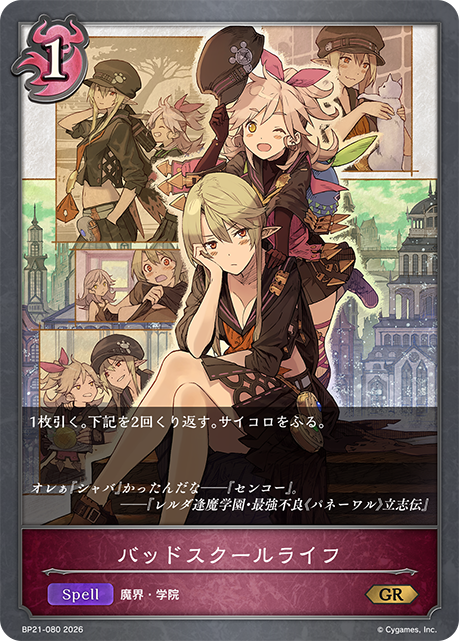
主BP21-080/BP21-P43：バッドスクールライフ主卡组 × 3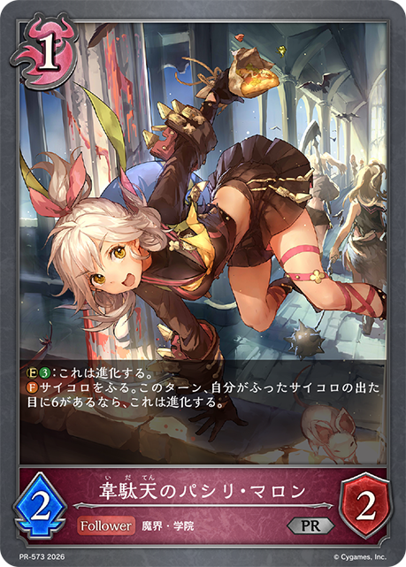
主BP21-081/PR-573：韋駄天のパシリ・マロン主卡组 × 3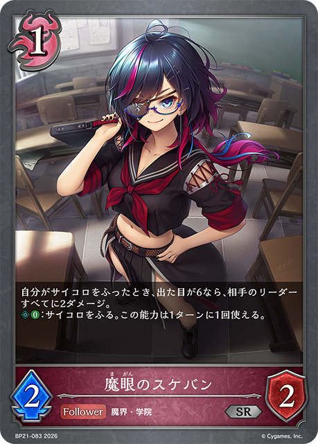
主BP21-083/BP21-P44：魔眼のスケバン主卡组 × 3 主BP21-114/PR-582：大いなる学び舎主卡组 × 3
主BP21-114/PR-582：大いなる学び舎主卡组 × 3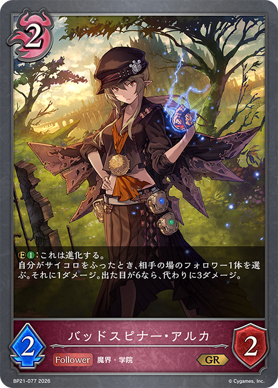
主BP21-077/BP21-P40：バッドスピナー・アルカ主卡组 × 3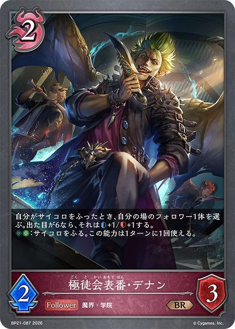
主BP21-087/BP21-P48：極徒会表番・デナン主卡组 × 3 主BP21-113/PR-565：煌奏の学徒・アンリエット主卡组 × 3
主BP21-113/PR-565：煌奏の学徒・アンリエット主卡组 × 3 主BP21-075/BP21-SL19/BP21-U05：エンペラーフィスト・ガロム主卡组 × 3
主BP21-075/BP21-SL19/BP21-U05：エンペラーフィスト・ガロム主卡组 × 3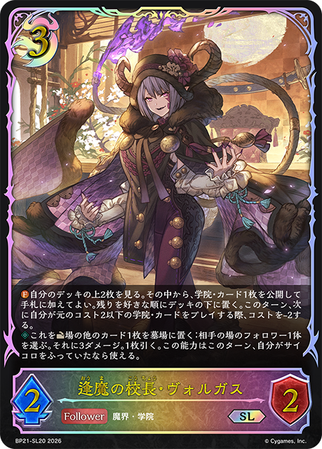
主BP21-076/BP21-SL20：逢魔の校長・ヴォルガス主卡组 × 3 主BP21-110/BP21-SL26：レジェンドティーチャー・ルシウス主卡组 × 3主BP21-116：絆の証明主卡组 × 2
主BP21-110/BP21-SL26：レジェンドティーチャー・ルシウス主卡组 × 3主BP21-116：絆の証明主卡组 × 2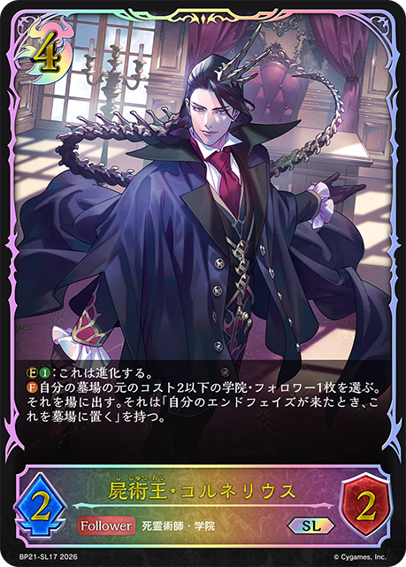
主BP21-073/BP21-SL17：屍術王・コルネリウス主卡组 × 3 主BP21-112/BP21-SL28/BP21-U07：駆動の領域・グレティナ主卡组 × 3主BP11-069/BP11-SL13：カオスルーラー・アイシィレンドリング主卡组 × 1主BP19-081/BP19-P22：蛇殿の執行者・ゲノムエル主卡组 × 1
主BP21-112/BP21-SL28/BP21-U07：駆動の領域・グレティナ主卡组 × 3主BP11-069/BP11-SL13：カオスルーラー・アイシィレンドリング主卡组 × 1主BP19-081/BP19-P22：蛇殿の執行者・ゲノムエル主卡组 × 1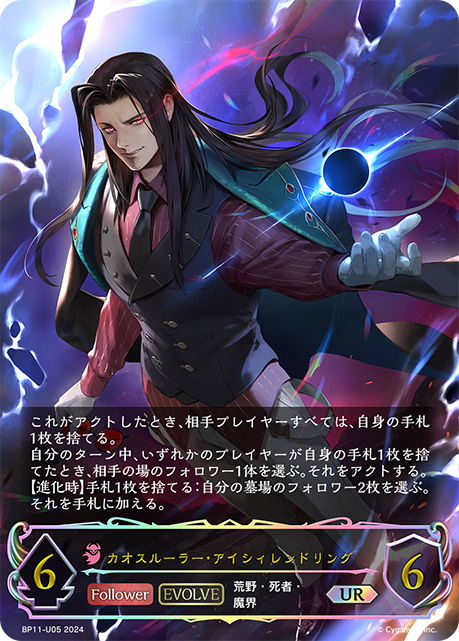
进BP11-070/BP11-U05：カオスルーラー・アイシィレンドリング进化 × 1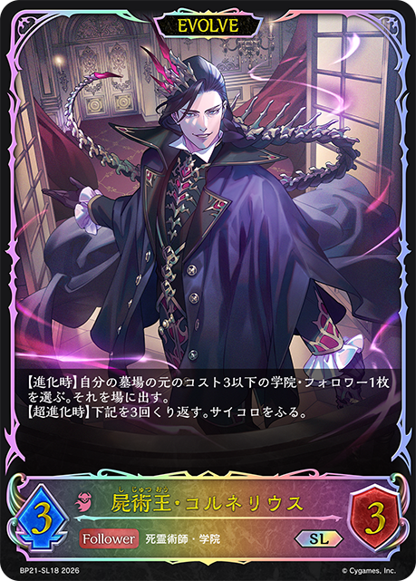
进BP21-074/BP21-SL18：屍術王・コルネリウス进化 × 3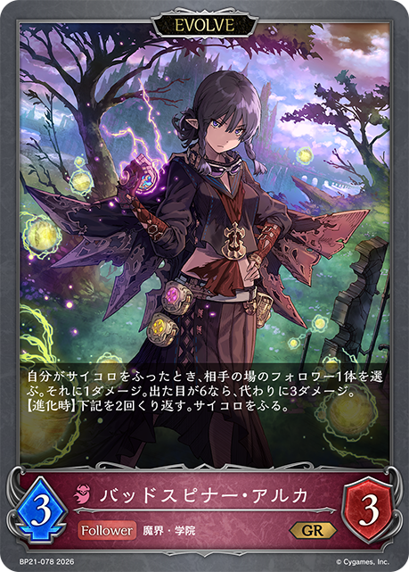
进BP21-078/BP21-P41：バッドスピナー・アルカ进化 × 2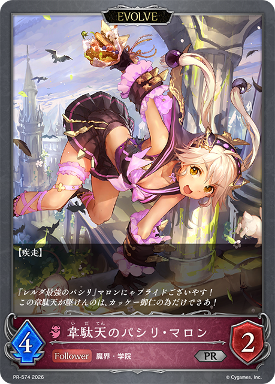
进BP21-082/PR-574：韋駄天のパシリ・マロン进化 × 2 进BP21-111/BP21-SL27：レジェンドティーチャー・ルシウス进化 × 2+2+2+1-2-1-1-1+3+2
进BP21-111/BP21-SL27：レジェンドティーチャー・ルシウス进化 × 2+2+2+1-2-1-1-1+3+2 +1-2-1-1-1-1+2+2+2-2-1-1-1-1+3+2+2-2-1-1-1-1-1+3+2-1-1-1
+1-2-1-1-1-1+2+2+2-2-1-1-1-1+3+2+2-2-1-1-1-1-1+3+2-1-1-1 +3
+3 +2
+2 +2
+2 +2
+2 +2+1
+2+1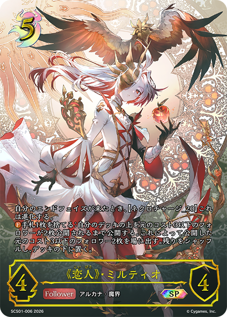
+1-3-3-2-2-1-1-1+3+2+1-2-1-1-1-1+3+2 +1-2-1-1-1-1
+1-2-1-1-1-1 +3
+3 +3+2+1+1-3-3-2-2+2+2
+3+2+1+1-3-3-2-2+2+2 +2+1-2-1-1-1-1-1
+2+1-2-1-1-1-1-1 +3+3
+3+3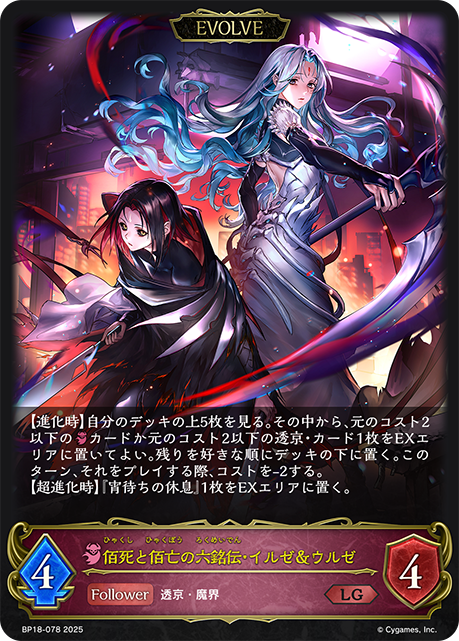
+2+2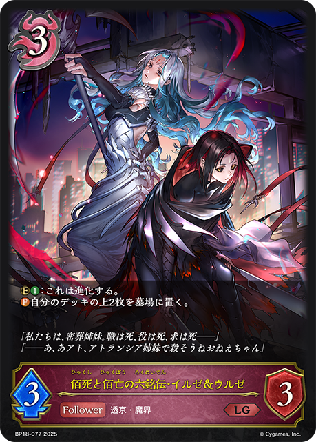
+2 +1-3-3-2-2-1-1-1+3+3
+1-3-3-2-2-1-1-1+3+3 +2+1+1+1+1-3-2-2-2-1-1-1+3+2+2-2-1-1-1-1-1+2+2+2-2-1-1-1-1+3+2+1+1-2-1-1-1-1-1+3+3+3+2+1-3-2-2-2-1-1-1+3+2+2+1-2-2-1-1-1-1
+2+1+1+1+1-3-2-2-2-1-1-1+3+2+2-2-1-1-1-1-1+2+2+2-2-1-1-1-1+3+2+1+1-2-1-1-1-1-1+3+3+3+2+1-3-2-2-2-1-1-1+3+2+2+1-2-2-1-1-1-1 +3+1+1-2-1-1-1+3+2+1+1-2-1-1-1-1-1+3+2+1+1+1+1+1-3-2-1-1-1-1-1+3+1+1-2-1-1-1+3+1-2-1-1+3+1-1-1-1+2+1+1+1+1-2-1-1-1-1+2+2+2-2-1-1-1-1+3+2-2-1-1-1+3+3+2+2+1-3-3-2-1-1-1+3+2+2-2-1-1-1-1-1+3+2+2+2+2+1
+3+1+1-2-1-1-1+3+2+1+1-2-1-1-1-1-1+3+2+1+1+1+1+1-3-2-1-1-1-1-1+3+1+1-2-1-1-1+3+1-2-1-1+3+1-1-1-1+2+1+1+1+1-2-1-1-1-1+2+2+2-2-1-1-1-1+3+2-2-1-1-1+3+3+2+2+1-3-3-2-1-1-1+3+2+2-2-1-1-1-1-1+3+2+2+2+2+1 +1-3-3-2-2-1-1-1+2+2+2-2-1-1-1-1+3+3+2-2-2-1-1-1-1
+1-3-3-2-2-1-1-1+2+2+2-2-1-1-1-1+3+3+2-2-2-1-1-1-1| 图片 | 平均张数 | 使用率 | 0张比例 | 1张比例 | 2张比例 | 3张比例 |
|---|---|---|---|---|---|---|
| 3.00 | 100.0% | 0.0% | 0.0% | 0.0% | 100.0% | |
|
3.00 | 100.0% | 0.0% | 0.0% | 0.0% | 100.0% |
| 3.00 | 100.0% | 0.0% | 0.0% | 0.0% | 100.0% | |
| 3.00 | 100.0% | 0.0% | 0.0% | 0.0% | 100.0% | |
| 3.00 | 100.0% | 0.0% | 0.0% | 0.0% | 100.0% | |
| 3.00 | 100.0% | 0.0% | 0.0% | 0.0% | 100.0% | |
| 3.00 | 100.0% | 0.0% | 0.0% | 0.0% | 100.0% | |
| 3.00 | 100.0% | 0.0% | 0.0% | 0.0% | 100.0% | |
|
3.00 | 100.0% | 0.0% | 0.0% | 0.0% | 100.0% |
|
3.00 | 100.0% | 0.0% | 0.0% | 0.0% | 100.0% |
|
2.31 | 84.4% | 15.6% | 6.3% | 9.4% | 68.8% |
|
1.97 | 75.0% | 25.0% | 6.3% | 15.6% | 53.1% |
|
1.41 | 56.3% | 43.8% | 6.3% | 15.6% | 34.4% |
|
0.94 | 50.0% | 50.0% | 15.6% | 25.0% | 9.4% |
|
0.78 | 31.3% | 68.8% | 6.3% | 3.1% | 21.9% |
|
0.28 | 15.6% | 84.4% | 6.3% | 6.3% | 3.1% |
|
0.22 | 15.6% | 84.4% | 9.4% | 6.3% | 0.0% |
|
0.22 | 15.6% | 84.4% | 9.4% | 6.3% | 0.0% |
|
0.34 | 12.5% | 87.5% | 0.0% | 3.1% | 9.4% |
|
0.28 | 12.5% | 87.5% | 0.0% | 9.4% | 3.1% |
|
0.22 | 9.4% | 90.6% | 0.0% | 6.3% | 3.1% |
|
0.13 | 9.4% | 90.6% | 6.3% | 3.1% | 0.0% |
|
0.16 | 6.3% | 93.8% | 0.0% | 3.1% | 3.1% |
|
0.16 | 6.3% | 93.8% | 0.0% | 3.1% | 3.1% |
|
0.13 | 6.3% | 93.8% | 0.0% | 6.3% | 0.0% |
| 0.13 | 6.3% | 93.8% | 0.0% | 6.3% | 0.0% | |
|
0.09 | 3.1% | 96.9% | 0.0% | 0.0% | 3.1% |
|
0.09 | 3.1% | 96.9% | 0.0% | 0.0% | 3.1% |
|
0.09 | 3.1% | 96.9% | 0.0% | 0.0% | 3.1% |
|
0.03 | 3.1% | 96.9% | 3.1% | 0.0% | 0.0% |
| 0.03 | 3.1% | 96.9% | 3.1% | 0.0% | 0.0% |
| 图片 | 平均张数 | 使用率 | 0张比例 | 1张比例 | 2张比例 | 3张比例 |
|---|---|---|---|---|---|---|
| 2.88 | 100.0% | 0.0% | 0.0% | 12.5% | 87.5% | |
| 2.31 | 100.0% | 0.0% | 0.0% | 68.8% | 31.3% | |
| 2.22 | 100.0% | 0.0% | 0.0% | 78.1% | 21.9% | |
|
1.00 | 75.0% | 25.0% | 50.0% | 25.0% | 0.0% |
|
1.06 | 56.3% | 43.8% | 6.3% | 50.0% | 0.0% |
|
0.25 | 12.5% | 87.5% | 0.0% | 12.5% | 0.0% |
| 0.09 | 9.4% | 90.6% | 9.4% | 0.0% | 0.0% | |
| 0.13 | 6.3% | 93.8% | 0.0% | 6.3% | 0.0% | |
|
0.06 | 6.3% | 93.8% | 6.3% | 0.0% | 0.0% |